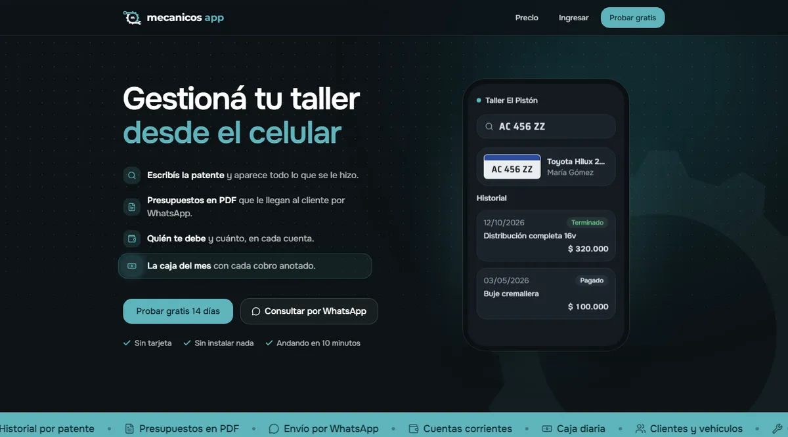
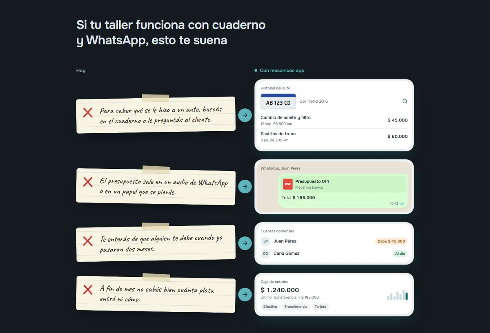
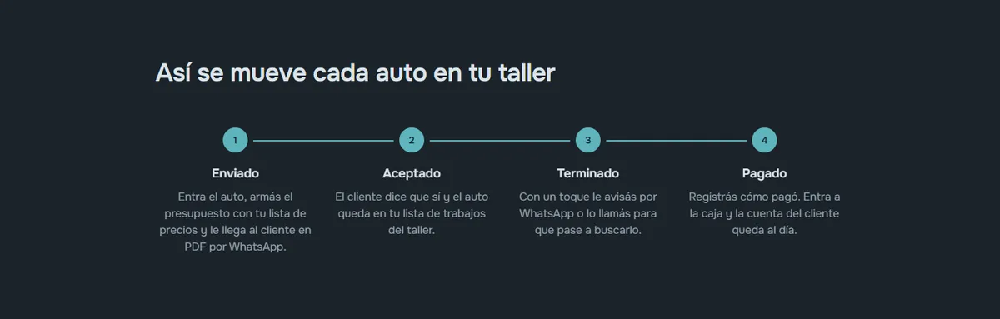
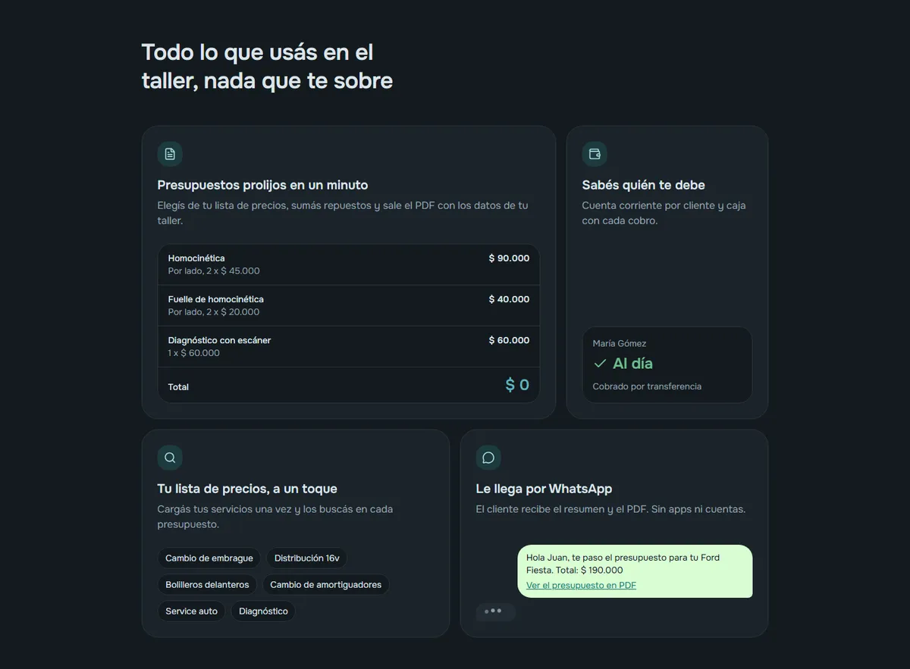
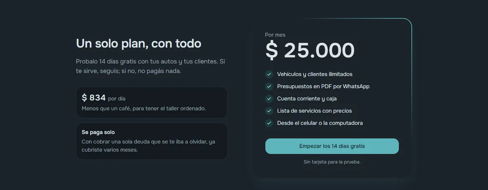

mecanicos app: gestionar el taller desde el celular
Mi SaaS para talleres mecánicos que hoy trabajan con cuaderno y WhatsApp: historial por patente, presupuestos en PDF, cuenta corriente y caja, todo en un solo lugar.
- Rol
- Fundador · diseño y desarrollo
- Tipo
- SaaS B2B
- Stack
- Figma, Next.js, Vercel
- Período
- 2025 — hoy

01 · Problema
El taller vive en un cuaderno y en WhatsApp
En muchos talleres chicos, el historial de cada auto está anotado en un cuaderno, los presupuestos se escriben a mano o por mensaje y nadie sabe con certeza quién debe cuánto. Cuando vuelve un cliente, reconstruir qué se le hizo a su auto lleva tiempo.
El desafío: darle al dueño del taller una herramienta que pueda usar desde el celular, sin instalar nada ni aprender un sistema complicado.

02 · Proceso
Del cuaderno al producto
Entender el día a día
Relevé cómo trabaja un taller: recibe el auto, presupuesta, repara, cobra y a veces fía.
Elegir el eje
La patente es lo que todos conocen: todo el historial se organiza a partir de ella.
Priorizar módulos
Clientes y vehículos, servicios con precio, presupuestos, cuenta corriente y caja.
Diseñar y publicar
Prototipo en Figma, desarrollo en Next.js y deploy en Vercel.
4 estados para cada auto
Modelé el recorrido de un trabajo con 4 estados simples que el mecánico ya usa en su cabeza: enviado, aceptado, terminado y pagado.

03 · Solución
Decisiones de diseño
- Mobile primero: el dueño del taller usa el celular; la computadora es opcional.
- Todo por patente: buscás el auto y ves todo lo que se le hizo, sin depender de la memoria.
- Usar el canal que ya existe: el presupuesto se genera en PDF y se envía por WhatsApp; el cliente no necesita instalar ninguna app.
- Plata clara: la cuenta corriente muestra quién debe y cuánto, y la caja diaria cierra el día.
- Precios cargados una vez: un catálogo de servicios con precio arma los presupuestos más rápido.
- Probar sin riesgo: 14 días gratis, sin tarjeta, y cada taller ve solo sus propios datos.

04 · Resultado
Dónde está hoy y qué aprendí
- 4estados por trabajo
- 14días de prueba gratis
- 1plan simple, sin letra chica
- 0instalaciones necesarias

Qué aprendí
Hacer un producto propio me obligó a pensar más allá de la interfaz: el precio, la prueba gratis y las preguntas frecuentes también son parte de la experiencia.
Y que la mejor función es la que el usuario ya entiende: apoyarme en WhatsApp y en la patente hizo que no haga falta explicar el sistema.